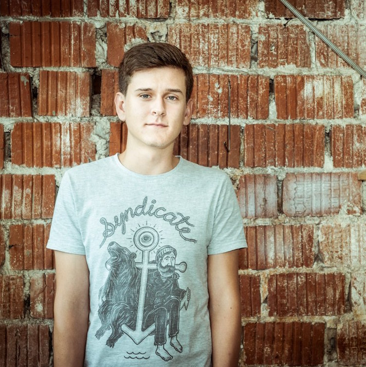

Верстальщики не нужны. На самом деле нет

Роман Коробейников
Верстальщик в Piano, piano.io
Верстальщики не нужны?

Мобильные верстальщики не существуют

Есть верстальщики, есть фронтенд-разработчики
Верстка — дизайн

Нужно знать больше, чем HTML и CSS
- Верстка — обособленный процесс
- Огромное количество технологий, которыми нужно владеть
- Уделяйте внимание мелочам, создавайте ощущение от продукта
- Оставайтесь в верстке, верстальщики нужны
Fork me on GitHub